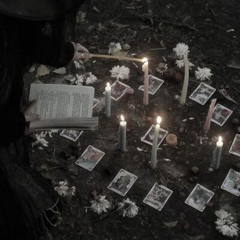

Детективна настільна гра ЛІСИ У ВУЛЬФСТРІКТІ
Маленьке містечко Вулфкрік,
загублене серед густих лісів штату
Мен, завжди було тихим і спокійним
— до 15 жовтня 1985 року..

У ту ніч місцевий історик
Едвард Кроу, відомий своєю
одержимістю стародавніми легендами,
зник безвісти.
Його будинок знайшли порожнім, але
з явними слідами боротьби: розбиті
меблі, кров на підлозі
_20260903_191218_0000.jpg)

Через тиждень у лісі неподалік
виявили тіло Едварда, але причина
смерті залишилася загадкою.
Експертиза показала, що його серце
зупинилося без видимих причин
Місцеві шепталися про стару
легенду: про "Тінь Вулфкріка" —
древню сутність, яка, за
переказами, прокидається кожні
50 років,
щоб забрати нову жертву.



Ви є команда детективів із Бюро
спеціальних розслідувань,
яких викликали до Вулфкріка,
щоб розкрити справу. Але час
спливає: з моменту смерті Едварда
минуло 6 днів...